DESCRIPCIÓN GENERAL Y FUNCIONAMIENTO DEL SISTEMA
La caja de cambios automática ZF 4HP 16 consta, principalmente, de los siguientes componentes.
Mecánicos
- Convertidor de par con TCC
- Conjunto de varillas de transmisión
- Dos conjuntos múltiples de embrague de disco: Embrague B,E
- Tres conjuntos múltiples de freno: Freno C,D,F
- Válvula de embrague de bloqueo
- Dos trenes de engranajes planetarios
- Una bomba de aceite
- Conjunto final de transmisión y diferencial
Electrónicos
- Dos válvulas de solenoide de cambios (sol. 1,2)
- Cuatro válvulas de solenoide de control de la presión (EDS)
- Dos sensores de velocidad: A/T ISS y A/T OSS
- Sensor de temperatura del aceite
- Módulo de control de la caja de cambios automática (TCM)
- Conjunto del mazo de cables
Componentes mecánicos
Convertidor de par
El convertidor consta del rotor, la rueda de turbina, el miembro de reacción (estator) y el aceite para transmitir el par. El rotor, impulsado por el motor, hace que el aceite del convertidor fluya siguiendo un cauce circular. El flujo de aceite llega a la rueda de la turbina, donde la dirección del flujo se desvía. En el cubo, el aceite sale de la turbina y llega al miembro de reacción (estator), donde es desviado otra vez para que llegue al rotor con el ángulo de flujo correcto.
El efecto inverso genera movimiento en el estator, y luego el par de reacción amplifica el par de la turbina.
La relación entre el par de la turbina y el par es conocida como multiplicación de par.
Cuanto mayor sea la diferencia de velocidad entre la bomba y la turbina, tanto mayor será la multiplicación de par; es en su punto máximo cuando la turbina está en una parada. Cuanto mayor sea la velocidad de la turbina, tanto menor será la multiplicación de par.
Cuando la velocidad de la turbina llega a alrededor del 85% de la velocidad de la bomba, la multiplicación de par = 1, es decir el par de la turbina equivale al par de la bomba.
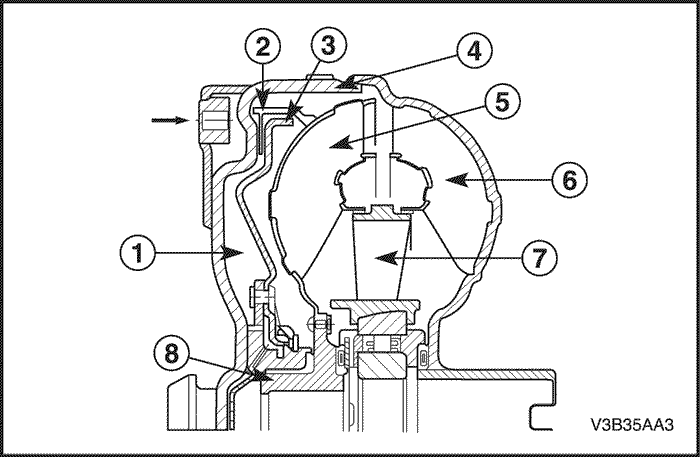


El estator, que está soportado contra el cárter a través de la rueda libre, se gira entonces libremente en el flujo de aceite y la rueda libre se supera. Desde este punto en adelante, el convertidor actúa como acoplamiento hidráulico simple.
Espacio detrás del pistón del embrague de bloqueo
- Forro de fricción
- Pistón de embrague de bloqueo
- Tapa del convertidor
- Rueda de turbina
- Rotor
- Estator
- Cubo de turbina
- Cubo del rotor del convertidor de par
Embrague de bloqueo del convertidor de par (TCC)
El embrague de bloqueo del convertidor es un dispositivo que elimina el deslizamiento del convertidor y, por tanto, ayuda a mejorar el consumo de combustible.
El principio de control anterior para el funcionamiento del embrague de bloqueo del convertidor ha sido sustituido por una función de control en la 4 HP 16. Ese embrague es acoplado y liberado de manera controlada. Durante la fase controlada, se crea una ligera diferencia de velocidad entre el rotor y la rueda de la turbina. Esto garantiza que la vibración producida por la rotación del motor no se transmita a la caja de cambios. El resultado es una calidad del cambio óptima.
Una válvula electrónica reguladora de la presión establece la regulación de la presión del pistón del embrague del convertidor.
Cuando está abierta (gama de conversión), la presión del aceite detrás del pistón del embrague de bloqueo del convertidor es igual a la de la zona de la turbina. El flujo pasa a través del eje de la turbina y por detrás del pistón, hacia la cámara de la turbina.
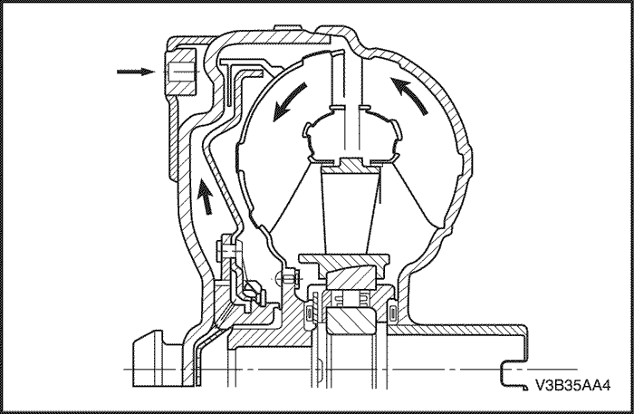
Para acoplar el embrague de bloqueo, se modifica (invierte) la dirección del flujo por medio de una válvula en el selector hidráulico. Al mismo tiempo, se purga el espacio detrás del pistón del embrague de bloqueo. La presión del aceite pasa de la cámara de la turbina al pistón del embrague de bloqueo y empuja la tapa del convertidor. De este modo, los forros que hay entre el pistón y la tapa bloquean la turbina, lo que permite una transmisión completamente rígida, sin deslizamiento (o un deslizamiento reducido si se controla), a la etapa mecánica de la caja de cambios.
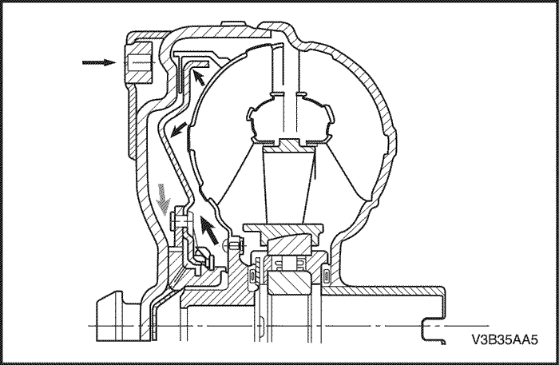
Bomba de aceite
La bomba de aceite está situada entre el convertidor de par y la carcasa de la caja de cambios, y es accionada directamente por el convertidor de par. La bomba succiona el aceite a través de un filtro y lo lleva a la válvula principal reguladora de la presión del sistema de control. El exceso de flujo de aceite retorna a la bomba. La bomba de aceite cumple las funciones siguientes:
- Genera presión de funcionamiento.
- Entrega aceite a presión al convertidor de par, impidiendo, de esta forma, la formación de burbujas de aire en el aceite.
- Induce un flujo de aceite a través del convertidor de par para de eliminar calor.
- Suministra presión de aceite al sistema de control hidráulico.
- Suministra presión de aceite a los componentes del cambio de marchas.
- Lubrica la caja de cambios con aceite.
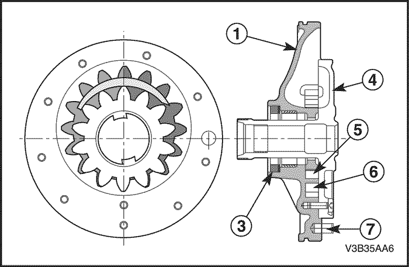
Alojamiento de la bomba
- Disco
- Junta hermética de eje
- Árbol de estator
- Rueda de bomba
- Engranaje anular de la bomba
- Pasador
Engranajes planetarios
La caja de cambios automática ZF 4HP 16 está equipada con un engranaje central, 4 engranajes planetarios, un portasatélites y una corona.
Cada engranaje van situados directamente uno detrás de otro y vinculados. En otras palabras, el engranaje anular delantero va vinculado de forma permanente al portador planetario trasero, y el portador planetario delantero va vinculado al engranaje anular trasero.
Las relaciones de engranajes individuales se obtienen vinculando de diversas formas los elementos del juego de engranajes por medio de embragues y frenos.
En el 4HP 16, el flujo de potencia va dirigido al tren de engranajes planetarios por medio del portasatélites trasero o del engranaje central trasero, o por medio de ambos simultáneamente, según el engranaje de que se trate. La salida se obtiene siempre por medio del portador planetario delantero.
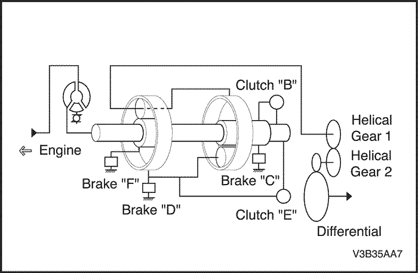
Elementos de cambios: Embragues multidisco y frenos
La finalidad de los elementos de cambios consiste en realizar cambios bajo carga, sin que se interrumpa el flujo de tracción.
Los elementos de cambios constan de lo siguiente.
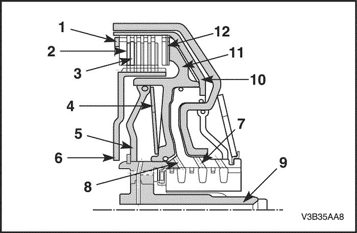
- Anillo elástico de retención
- Disco de acero
- Disco revestido
- Muelle de platillo
- Placa deflectora
- Portador de disco
- Eje primario
- Suministro de aceite al igualador de presión dinámica
- Suministro de aceite al embrague
- Cilindro
- Pistón
- Disco de muelle
Los elementos de cambios son acoplados hidráulicamente. El aceite presurizado llega al espacio entre el cilindro y el pistón, y, como resultado, se comprimen los discos. El embrague/freno es acoplado cuando baja la presión del aceite, el muelle de platillo que actúa sobre el pistón, lo presiona para que vuelva a su posición inicial. Entonces, el embrague/freno es liberado de nuevo.
Según el engranaje, los embragues multidisco B y E suministran el par motor al tren de engranajes planetarios, y los frenos multidisco C, D y F dirigen el par al alojamiento.
La presión dinámica en los embragues B y E es igual: es decir, la presión dinámica delante del pistón y detrás de él, es igual. Ese efecto igualador se consigue de la forma siguiente.
El espacio entre la placa deflectora y el pistón se llena de aceite sin presurizar. Se acumula una presión dinámica según la velocidad del motor. También se acumula espacio entre presiones. Sin embargo, simultáneamente se produce una presión estática, que provoca el acoplamiento del embrague. Si se alivia la presión estática, el muelle de platillo puede forzar al pistón para que vuelva a su posición original.
Las ventajas de esa igualación de la presión dinámica son:
- Abertura fiable del embrague en todos los alcances de velocidad
- Cambios más suaves.
Bloqueo de estacionamiento
El bloqueo de estacionamiento es activado por medio de la palanca selectora, cuando está en la posición P. Impide mecánicamente que el vehículo se eche a rodar.
La placa de tope es activada por el árbol selector, que va conectado permanentemente a la palanca selectora por medio de un cable de tracción. El trinquete de bloqueo de estacionamiento del sistema de bloqueo de estacionamiento va soldado al árbol lateral de la caja de cambios, lo que impide que las ruedas motrices giren.
Ello bloquea las ruedas conducidas.
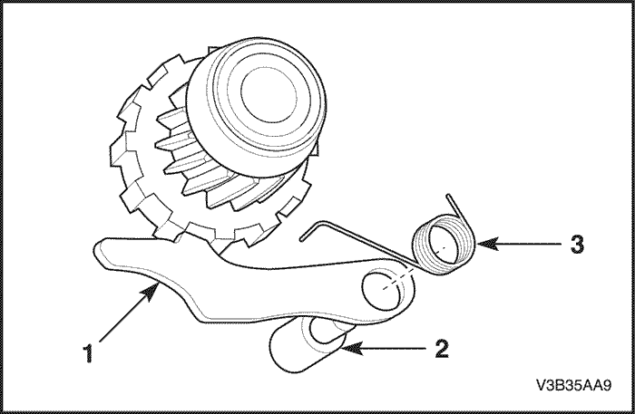
- Trinquete
- Tornillo de apoyo
- Muelle de columna
Cuerpo de válvula
El cuerpo de válvula realiza las tareas siguientes:
- Genera la presión de funcionamiento necesaria para activar los elementos del cambio de marchas.
- Activa los elementos de cambios individuales por medio de las válvulas de embrague.
- Asegura el funcionamiento limitado de la caja de cambios automática, en caso de fallo de los equipos electrónicos.
- Activación del embrague de bloqueo.
- Genera la presión de lubricación para la caja de cambios
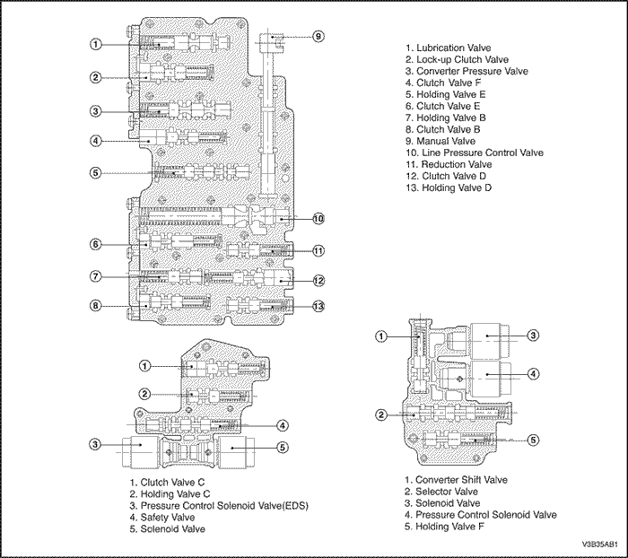
Componentes electrónicos
Palanca selectora/conmutador de programas
El conductor acopla la posición de viaje por medio de la palanca selectora:
P: posición de estacionamiento R: marcha atrás N: neutral D: velocidades adelante Conmutador de posición de estacionamiento/neutral
El conmutador de posición de estacionamiento/neutral está situado en el árbol selector e informa al TCM de la posición actual de la palanca selectora P-R-N-D-3-2-1.
La posición de la palanca selectora es transmitida al TCM de forma codificada por 4 líneas. La codificación es de un carácter tal, que permite identificar los fallos de funcionamiento en el cable de conexión.
El conmutador de posición de estacionamiento/neutral está situado en el árbol selector, que va conectado a la palanca selectora por medio de un cable de tracción. Además, el conmutador de posición de estacionamiento/neutral controla el interbloqueo del arrancador, la luz de marcha atrás y el indicador de la posición de la palanca selectora en el panel de instrumentos.
Combinación de señales
. | L1 | L2 | L3 | L4 |
P | 0 | 0 | 12 | 0 |
R | 0 | 0 | 0 | 12 |
N | 0 | 12 | 0 | 0 |
D | 12 | 12 | 12 | 0 |
3 | 12 | 12 | 0 | 12 |
2 | 12 | 0 | 12 | 12 |
1 | 0 | 12 | 12 | 12 |
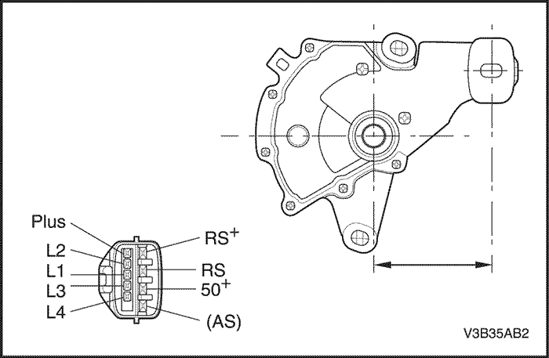
Sensor de velocidad de salida de la caja de cambios automática (A/T OSS)
El vehículo A/T OSS es un lector de inducción magnética que transmite la información relativa a la velocidad del vehículo al TCM.
La información sobre la velocidad del vehículo es usada por el TCM para controlar la sincronización de cambios, la presión de funcionamiento y la aplicación y liberación del TCC (embrague de bloqueo).
El sensor de velocidad de salida sube en la caja al rotor del sensor de velocidad, que es presionado sobre el engranaje cilíndrico de dientes rectos. Se mantiene una separación de 0,1 ~ 1,3 mm (0,004 ~ 0,05 pulg.) entre el sensor y los dientes del engranaje de dientes rectos. El sensor consta de un imán permanente rodeado de una bobina de cable.
Al girar el diferencial, el sensor de velocidad de salida (OSS) genera una señal AC.
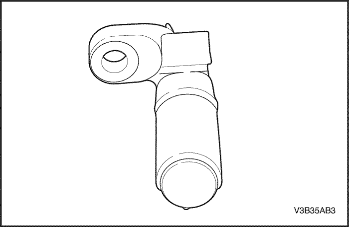
Sensor de velocidad de entrada de la caja de cambios automática (A/T ISS)
El A/T ISS es un captador inductivo magnético que transmite la información relativa a la velocidad de entrada de la caja de cambios, al TCM.
El TCM utiliza la información sobre la velocidad de entrada de la caja de cambios para controlar la presión de funcionamiento, la aplicación y liberación del TCC y las pautas de cambio de marchas de la caja de cambios. Esa información se utiliza asimismo para calcular las relaciones adecuadas de operación de engranajes y el deslizamiento del TCC.
El sensor de velocidad de entrada sube al pistón B, que está dentro del cuerpo de válvula.
Se mantiene una separación de 1,8 ~ 2,2 mm (0,07 ~ 0,086 pulg.) entre el sensor y el pistón B.
El sensor consta de un imán permanente rodeado de una bobina de cable. Cuando el pistón B es accionado por el árbol de la turbina, se induce una señal AC en el sensor de velocidad de entrada.
Velocidades más altas del vehículo inducen una frecuencia mayor y la medición de la tensión en el sensor.
La resistencia del sensor debe medir entre 825~835 ohmios a 20°C (68°F). El sensor puede medir de 1.000 a 8.000 HZ.
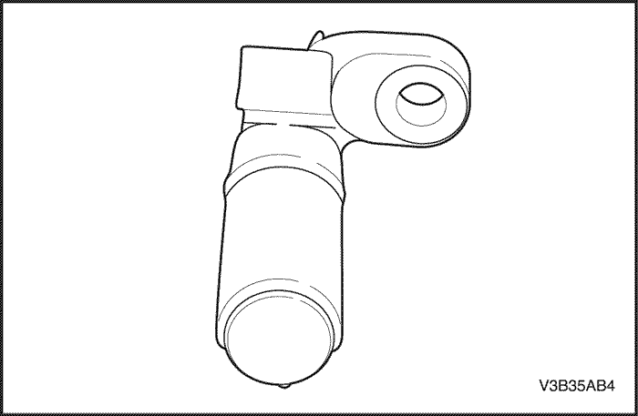
Válvula de solenoide de cambios: Solenoide 1,2
Los solenoides del cambio de marchas son dos válvulas de escape electrónicas, normalmente abiertas, idénticas, que controlan los cambios ascendentes y descendentes en todas las marchas de avance. Estas válvulas de solenoide de cambios actúan juntas en una combinación de secuencias de CONEXIÓN y DESCONEXIÓN para controlar la presión de funcionamiento y los mecanismos del cambio de marchas (embragues, frenos).
El solenoide 1 controla la presión de línea funcionamiento o baja (flujo hacia cada una de las válvulas de embrague) según su estado (ENERGIZADO / DESENERGIZADO), es decir, si el solenoide 1 está ENERGIZADO, la presión de funcionamiento será baja (87 - 116psi (6 - 8 bar)), y si el solenoide 1 está DESENERGIZADO, la presión de funcionamiento será alta (232 - 261 psi (16 - 18bar)).
El solenoide 2 controla el flujo de aceite a la válvula de embrague E o a la válvula de embrague de bloqueo, mediante la señal de ENERGIZADO / DESENERGIZADO.
El TCM monitoriza numerosas señales de entrada para determinar la combinación adecuada del estado de los solenoides y los engranajes de la caja de cambios, para las condiciones de funcionamiento del vehículo.
Engranaje | Solenoide 1 | Solenoide 2 |
Estacionamiento, neutral | ON (CONECTADO) | ON (CONECTADO) |
Primero | CONECTADO/DESCONECTADO | ON (CONECTADO) |
Segundo | CONECTADO/DESCONECTADO | OFF (DESCONECTADO) |
Tercero | CONECTADO/DESCONECTADO | OFF (DESCONECTADO) |
Cuarto | CONECTADO/DESCONECTADO | OFF (DESCONECTADO) |
Marcha atrás | CONECTADO/DESCONECTADO | ON (CONECTADO) |
. | Presión de funcionamiento | Resistencia |
Válvula de solenoide 1/Válvula de solenoide 2 | CONECTADO (bajo) 89,9~98,6 psi (6,2~6,8 bares) DESCONECTADO (alto) - 221,9~253,24 psi
- (15,3~17,46 bares)
| 26,5 ± 0,5 ohmios |
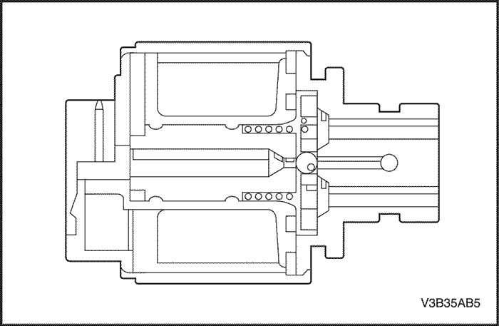
Válvula de solenoide de control de la presión (VÁLVULAS EDS 3, 4, 5, 6)
La válvula de control de la presión (válvula EDS 3, 4, 5, 6) es un regulador electrónico de la presión que controla con precisión la operación de los embragues, frenos y embrague de bloqueo.
La válvula reduce la presión del sistema con que son suministradas las válvulas de solenoide corriente abajo y las válvulas eléctricas reguladoras de la presión. Eso posibilita el uso de válvulas de solenoide más pequeñas. La EDS requiere una presión de entrada constante.
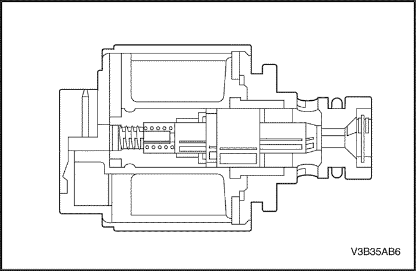
Sensor de temperatura del aceite de la caja de cambios (TFT)
El sensor TFT es un termistor de coeficiente de temperatura positiva (resistencia sensible a la temperatura), que suministra información al TCM sobre la temperatura del aceite de la caja de cambios. El sensor de temperatura está situado en el cuerpo de válvula. La temperatura calculada es un factor usado para determinar el tiempo de cambio y el tiempo de retardo del cambio.
La resistencia eléctrica interna del sensor varía en relación con la temperatura de trabajo del aceite de la caja de cambios (ver gráfico).
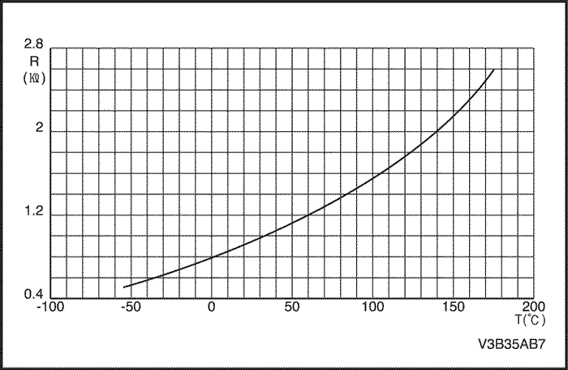
El TCM envía una señal de referencia de 5 voltios al sensor de temperatura y mide el aumento de tensión en el circuito eléctrico. Una temperatura mas elevada del aceite crea una mayor resistencia en el sensor de temperatura, midiendo así una señal de tensión más alta.
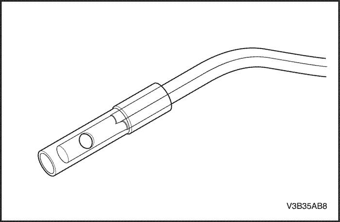
El TCM mide esa tensión como otra señal de entrada para ayudar a controlar la presión de funcionamiento, las pautas de cambios y la aplicación del TCC.
Cuando la temperatura del aceite de la caja de cambios alcanza los 140°C (284°F), el TCM pasa al "modo de funcionamiento a alta temperatura". Por encima de esta temperatura, el TCM modifica las pautas de cambios de la caja de cambios y aplica el TCC, en un intento por reducir la temperatura del aceite, reduciendo la generación de calor de la caja de cambios. Durante el modo caliente, el TCM aplica el TCC en todo momento en la cuarta marcha.
Además, el TCM da instrucciones de que se efectúen los cambios de segunda a tercera y de tercera a cuarta más pronto, para ayudar a reducir la generación de calor en el aceite. Es posible que el modo de funcionamiento a alta temperatura no esté disponible en algunas aplicaciones.
Sensor de la caja de cambios - Temperatura - Resistencia - Tensión (valores aproximados) |
°C(°F) | R alta (ohmios) | R baja (ohmios) | °C(°F) | R alta (ohmios) | R baja (ohmios) |
-40 (-40) | 586 | 556 | 50 (122) | 1,206 | 1,173 |
-30 (-22) | 641 | 611 | 60 (146) | 1,295 | 1,256 |
-20 (-4) | 699 | 670 | 70 (158) | 1,388 | 1,341 |
-10 (14) | 760 | 732 | 80 (176) | 1,485 | 1,430 |
0 (32) | 825 | 799 | 90 (194) | 1,585 | 1,522 |
10 (50) | 893 | 868 | 100 (212) | 1,690 | 1,617 |
20 (68) | 963 | 942 | 110 (230) | 1,798 | 1,715 |
25 (77) | 1,000 | 980 | 120 (248) | 1,910 | 1,816 |
30 (86) | 1,039 | 1,017 | 130 (266) | 2,025 | 1,920 |
. | . | . | 140 (284) | 2,145 | 2,027 |
Conector eléctrico de la caja de cambios
El conector eléctrico de la caja de cambios es un componente muy importante de su sistema de funcionamiento. Cualquier interferencia en la conexión eléctrica puede hacer que la caja de cambios active los Códigos de diagnóstico de averías (DTCs) y/o afectar su funcionamiento adecuado.
Los ítem siguientes pueden afectar a las conexiones eléctricas:
- Clavijas dobladas en el conector por un trato duro durante la conexión y desconexión.
- Hilos que retroceden de las clavijas o que llegan sueltos (en mazos de cables internos o externos).
- Contaminación de suciedad que entra en el conector al ser desconectado.
- Clavijas en el conector de cableado interno que salen del conector o sacados durante la reconexión.
- Una fuga excesiva de aceite de la caja de cambios que penetra en el conector, asciende por el mazo de cables externo y deteriora el aislamiento de los cables.
- Entrada de agua/humedad en el conector.
- Una baja retención de clavijas en el conector externo debido a una excesiva conexión y desconexión del conjunto del cableado del conector.
- Corrosión de clavijas debido a la contaminación.
- Conjunto del conector roto/agrietado.
- Puntos a recordar cuando se trabaja con el conjunto de conectores del cableado de la caja de cambios.
- Para quitar el conector, presionar entre sí las dos lengüetas y sacar recto (consulte la ilustración).
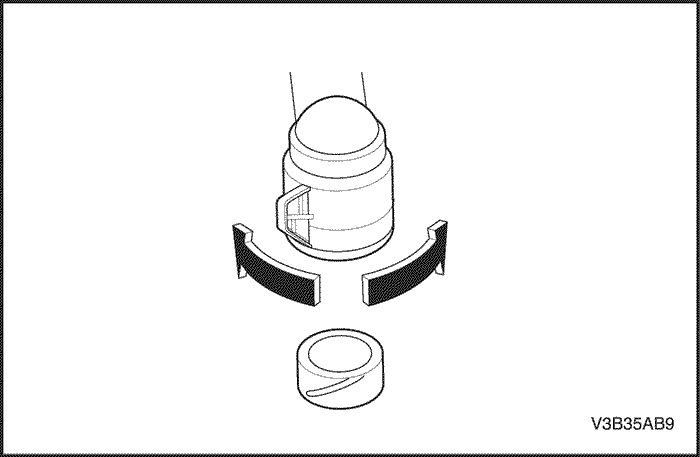
Limitar cuidadosamente retorcer o mover mucho el conector al quitarlo. Pueden doblarse las clavijas.
NO saque el conector con un destornillador u otra herramienta.
Para volver a poner el conector de cableado externo, oriente primero las clavijas alineando flechas en cada mitad del conector.
Enchufe el conector en la caja de cambios, sin retorcer ni inclinar los contactos.
El conector debe entrar en su sitio con una sensación positiva y/o un ruido.
Módulo de control de la caja de cambios (TCM)
El módulo de control de la caja de cambios (TCM) es un dispositivo electrónico que monitoriza las señales de entrada, para controlar diversas funciones de la caja de cambios, incluida la calidad de los cambios de marchas, y de los sensores, selectores y componentes de la caja de cambios, para procesarlas y utilizarlas en su programa de control. Basándose en la información de esta señal, el TCM controla diversas funciones de salida de la caja de cambios y otros dispositivos.
Data Link Connector (DLC)
El conector de enlace de datos (DLC) es un conector de cavidad múltiple. El DLC proporciona los medios para acceder a datos en serie del TCM, a fin de ayudar en el diagnóstico del tren de fuerza. El DLC permite al técnico el uso de una herramienta de exploración para monitorizar diversos sistemas y visualizar identificaciones de códigos de avería (DTC). El conector DLC está situado dentro del compartimiento del conductor, directamente debajo de la columna de la dirección.
Data Link Connector (TIPO CAN) 1,8L DOHC (Delphi 32 bit)
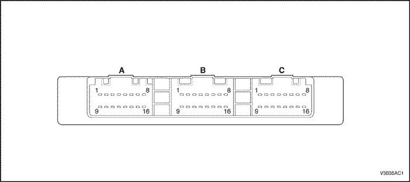
. | A Conector (azul) | B Conector (verde) | C Conector (gris) |
1 | Solenoide 2 | Toma de masa del sensor de temperatura del aceite de transmisión | Línea de la palanca de selector L1 |
2 | No usado | Sensor de velocidad de entrada (+) | No usado |
3 | Válvula de solenoide de control de la presión (EDS 4) | BAT + | No usado |
4 | Sensor TFT | Sensor de velocidad de entrada (-) | Conmutador de modo de retención |
5 | Conmutador de luz de parada | Sensor de velocidad de salida (-) | No usado |
6 | Indicador de modo de retención | Línea de la palanca de selector L3 | Alimentación de la EDS |
7 | DLC | Toma de masa del sensor de velocidad de entrada | Alimentación de la EDS |
8 | CAN Alto | Velocímetro | Suministro de solenoide |
9 | Solenoide 1 | No usado | No usado |
10 | Válvula de solenoide de control de la presión (EDS 5) | Sensor de velocidad de salida (+) | No usado |
11 | Válvula de solenoide de control de la presión (EDS 3) | Línea de la palanca de selector L4 | No usado |
12 | Válvula de solenoide de control de la presión (EDS 6) | Toma de masa | No usado |
13 | No usado | Toma de masa | No usado |
14 | No usado | No usado | No usado |
15 | No usado | Línea de la palanca de selector L2 | ENC CONECTADO |
16 | CAB Bajo | No usado | ENC CONECTADO |
Señales de entrada del TCM que afectan a la caja de cambios 4HP 16
Sensor de posición del acelerador del carburador
- Suministra datos sobre la posición del acelerador del carburador al TCM para determinar las pautas de cambios y la aplicación/liberación del TCC.
- Una entrada incorrecta del sensor de posición del acelerador del carburador puede provocar una pauta de cambios errática, una mala calidad del cambio o de la función del TCC
Sensor de velocidad de salida de la caja de cambios automática (eje secundario)
- Suministra datos sobre la velocidad del vehículo al TCM para determinar las pautas de cambios y la aplicación/liberación del TCC, así como cálculos de la relación de engranajes.
- Una entrada incorrecta del sensor de posición del acelerador del carburador puede provocar una pauta de cambios errática, una mala calidad del cambio o de la función del TCC
Sensor de velocidad de entrada de la caja de cambios automática (eje primario)
- Suministra datos sobre la velocidad de entrada de la caja de cambios al TCM para determinar las pautas de cambios y la aplicación / liberación del TCC, así como la relación de transmisión.
Sensor de temperatura del refrigerante del motor
- Suministra datos sobre la temperatura del refrigerante al TCM para determinar el acoplamiento inicial del TCC.
- Una entrada incorrecta del sensor de temperatura del refrigerante del motor puede provocar una aplicación inicial incorrecta del TCC
Velocidad del motor
- El módulo de encendido suministra datos sobre la velocidad del motor al TCM.
- El TCM utiliza información sobre la velocidad del motor para controlar cambios bien abiertos del acelerador del carburador y el ciclo de servicio del solenoide PWM del TCC.
Conmutador de luz de parada
- Suministra información sobre la aplicación del freno al TCM para controlar la aplicación y liberación del TCC.
- Una entrada incorrecta del conmutador de la luz de parada del TCC puede provocar una aplicación o liberación incorrecta del TCC.
Sensor de temperatura del aceite de la caja de cambios (TFT)
- Suministra información sobre la temperatura del aceite de la caja de cambios al TCM para determinar pautas de cambios alternas y la aplicación del TCC en condiciones de alta temperatura (funcionamiento en modo de alta temperatura).
- Una entrada incorrecta del sensor de temperatura de la caja de cambios puede provocar pautas de cambios alteradas, una mala calidad del cambio y la aplicación incorrecta del TCC.
| © Copyright Chevrolet Europe. Reservados todos los derechos |